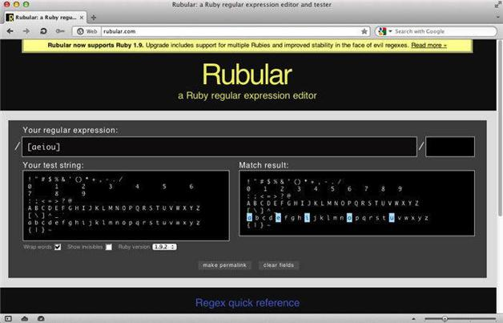

第5章 字符组
这一章，我们详细讨论一下字符组。字符组有时也被称为方括号表达式（bracketed expression）。字符组有助于匹配特定字符或者特定的字符序列。它们可以像字符简写式那样代表一大批字符。比如，\d匹配的字符与
[0-9]
所匹配的字符一样。
但字符组更有针对性，因此用途比简写式更广。
请在自己使用的正则表达式处理器中尝试以下示例。笔者在Opera中使用Rubular，而在桌面使用Reggy。
要做这个试验，请在网页的主文本区或者目标区域输入以下字符串：
! " # $ % & ' ( ) * + , - . /
0 1 2 3 4 5 6 7 8 9
: ; < = > ? @
A B C D E F G H I J K L M N O P Q R S T U V W X Y Z
[ \ ] ^ _ `
a b c d e f g h i j k l m n o p q r s t u v w x y z
{ | } ~
没有必要亲自动手输入这些字符，在本书配套代码库中的ascii-graphic.txt里能找到该文本。
请先使用字符组来匹配一个英文字符集。本例中，我们匹配英文元音字母：
[aeiou]
在下方文本框中，小写的元音字母应该被标亮了（见图5-1）。如何将大写元音字母标亮？如何同时匹配或标亮小写和大写元音字母？

图5-1 在Opera浏览器中使用Rubular的字符组功能
还可以使用字符组匹配某个范围的字符，比如
[a-z]
匹配的是从a到z的小写字母。试一下匹配更小范围的字符，比如从a到f：
[a-f]
当然你还可以指定一个范围的数字：
[0-9]
或者让范围更小：
[3-6]
现在发挥一下想象力，如果你想匹配10~19的偶数，可以将两个字符组合起来写，像这样：
\b[1][24680]\b
同理，也能想到用下面的表达式查找0~99的偶数：
\b[24680]\b|\b[1-9][24680]\b
要想创建一个匹配十六进制数的字符组怎么做呢？这里给出一个提示：
[a-fA-F0-9]
还可以在字符组内使用简写式。例如，要匹配空格和单词字符，可以创建这样一个字符组：
[\w\s]
它等同于：
[_a-zA-Z \t\n\r]
但是更容易键入。